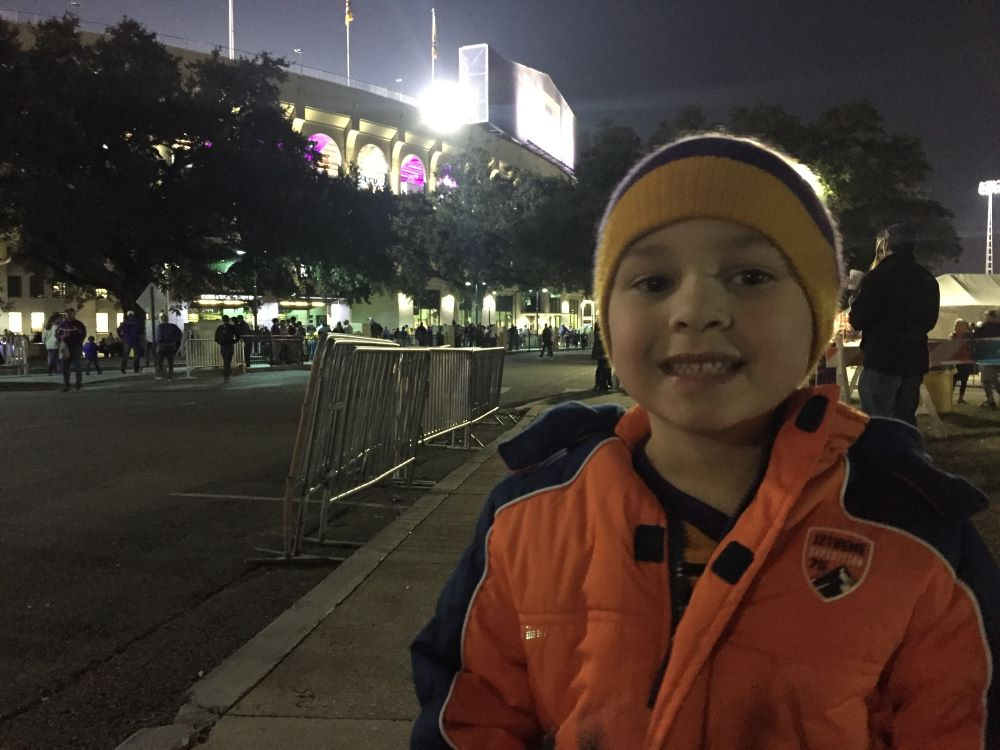

Free parking on an LSU gameday comes at a premium. Fans arriving on campus too late or finding themselves unsure of where to park are likely to be shut out when it comes to finding a spot. Luckily, years of attending games with my own father growing up taught me the best places to find amidst the gameday chaos.
Tiger Stadium illuminated with bright lights overhead as we marched across the Parade Grounds toward Memorial Tower, a nearly century-old monument to LSU's fallen in World War I. Its clock tower chimed as it struck 6 o'clock. Liam's anticipation grew. Kickoff was fast approaching.
After a short walk down Victory Hill, we found ourselves gazing up at the glow of the puprle and gold scoreboard above. Crowds gathered and jostled at the turnstiles. "Pregame" could be heard in all its glory as the Golden Band From Tigerland stirred the emotions of those ready for the opening kick.
Page 2